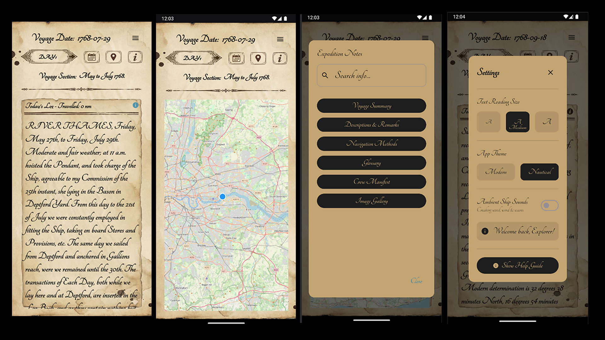
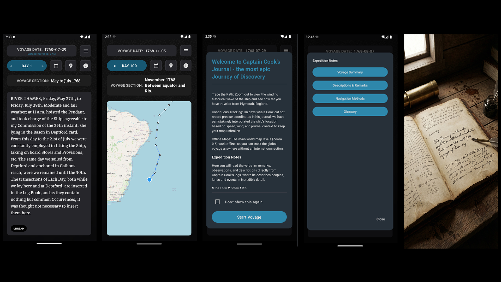

Experience History in Real-Time
The Journey is a high-fidelity simulator that tracks Captain James Cook’s epic 1768 voyage. Our app syncs with the historical calendar, delivering verbatim log entries exactly when they were written, 250+ years later.
Verbatim Log Entries
Access the actual remarks and observations from the logs of 1768. From the fitting of the ship at Deptford Yard to the crossing of the Equator, every word is historically sourced.
Interpolated Navigation
Using historical wind data and recorded speeds, our engine provides a continuous GPS track of the HMS Endeavour's location, even through the vast, unmapped stretches of the ocean.
Immersive Exploration Themes

The Nautical Aesthetic
Switch to the Nautical Theme for a period-accurate experience. It features high-resolution parchment textures and ambient ship sounds like creaking wood and ocean swells.

The Modern Explorer
The Modern Theme offers a sleek, high-contrast dark mode. Perfect for late-night reading, it includes global offline map support for tracking the voyage anywhere on Earth.
App Features & Specifications
| Start Date | July 27, 1768 (Historical Real-time Sync) |
| Mapping | Global Offline Maps (Zoom levels 0-5 included) |
| Content | Crew Manifest, Nautical Glossary, and Image Gallery |
| Accessibility | Dynamic Typography (Small, Medium, Large) |
| Audio | Spatial Ambient Ship Sounds toggle |